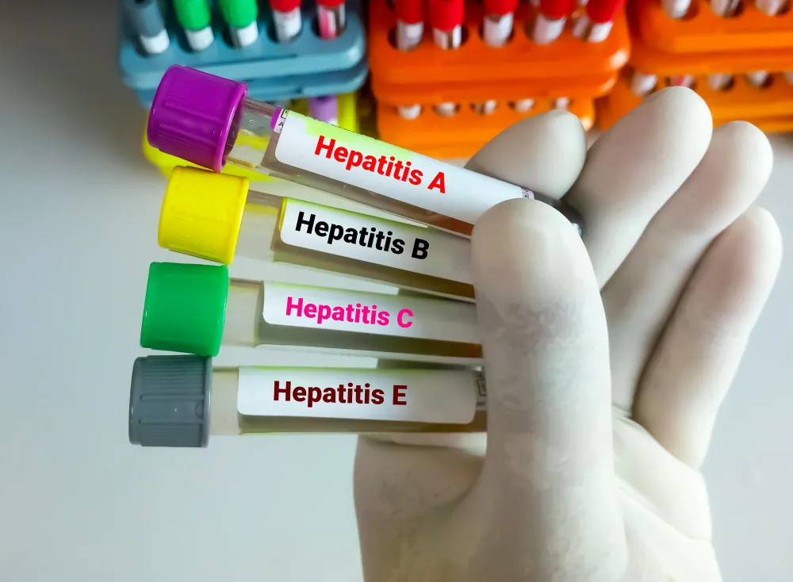

Hepatitis B vs Hepatitis C: Which Is More Dangerous — and What Every Indian Family Needs to Know in 2026
.webp)
Senior Liver Transplant & HPB Surgeon with 15+ years of clinical expertise.
10 Mar 2026

India carries two of the world's heaviest burdens of viral hepatitis simultaneously. According to the World Health Organization, over 40 million Indians are living with chronic Hepatitis B infection, and an estimated 6 to 12 million carry Hepatitis C. Together, these two viruses drive the majority of liver cirrhosis, liver failure, and liver cancer in the country.
When a family member is diagnosed with either infection, the first question is almost always the same: which one is worse? The honest answer is more nuanced than a simple ranking. Hepatitis B and C share the same ultimate destination — liver damage — but they travel there by different routes, respond to different treatments, and carry very different outlooks in 2026.
This guide compares both infections side by side, explains what each diagnosis means for the patient and their family, and tells you exactly what steps to take next.
How Each Virus Attacks the Liver
Hepatitis B
The Hepatitis B virus (HBV) integrates itself into the DNA of liver cells, establishing a reservoir that current antiviral medications cannot fully eradicate. The immune system mounts a response to infected cells, and it is this ongoing immune attack that causes inflammation and, over time, scarring. In adults who acquire the infection, approximately 5 to 10% develop chronic infection. However, in infants infected at birth, over 90% develop chronic disease — which is why mother-to-child transmission at birth is the dominant route in India.
In India, mother-to-child transmission accounts for approximately 35 to 40% of all chronic Hepatitis B cases. (WHO South-East Asia Region Report)
Hepatitis C
The Hepatitis C virus (HCV) does not integrate into liver cell DNA, which is one of the reasons it can be eradicated with antiviral treatment. However, it replicates rapidly and mutates frequently, which is why developing a vaccine has proved so challenging. In approximately 75 to 85% of adults who are exposed, the immune system fails to clear the virus, and chronic infection is established. The virus causes more gradual inflammation than Hepatitis B in many cases, but over decades, the cumulative damage is equally serious.
Global data from the WHO shows that Hepatitis C causes approximately 290,000 deaths annually — most from cirrhosis and liver cancer. (WHO Global Hepatitis Report 2024)
Head-to-Head Comparison — What Families Need to Know
Which Is More Dangerous? The Honest Medical Answer
Doctors hesitate to rank these infections against each other because the comparison depends heavily on when diagnosis is made, whether treatment is received, and what the patient's underlying liver health is.
That said, here is a nuanced clinical answer:
Hepatitis B Carries a Unique Long-Term Risk
Unlike Hepatitis C, Hepatitis B raises the risk of liver cancer even in patients who do not have cirrhosis. This means that a Hepatitis B patient with mild fibrosis still requires lifelong cancer surveillance with 6-monthly ultrasound and AFP blood tests. This ongoing cancer risk, combined with the impossibility of a complete cure, makes Hepatitis B a condition that requires lifelong specialist monitoring.
Chronic Hepatitis B infection increases the risk of hepatocellular carcinoma (liver cancer) by 100 times compared to the uninfected population. (Journal of Hepatology)
Hepatitis C Is More Likely to Become Chronic — But Is Now Curable
Hepatitis C is more likely to establish chronic infection than Hepatitis B in adults — but it is also now completely curable. A patient who receives and completes a course of modern Direct-Acting Antiviral (DAA) therapy, achieves Sustained Virological Response (SVR), and has not yet reached cirrhosis can effectively be considered cured — with liver cancer risk dropping significantly and life expectancy returning toward normal.
The tragedy is that the majority of people with Hepatitis C in India do not know they have it, and therefore never receive treatment. Untreated Hepatitis C remains one of the most preventable causes of liver cirrhosis and transplantation in the country.
When Hepatitis Becomes Cirrhosis — Recognising the Warning Signs
Both Hepatitis B and C can progress to cirrhosis silently. Families often miss the transition because the patient still "seems fine." These are the signs that indicate the liver disease has entered a more serious phase and requires urgent specialist evaluation:
- Abdominal swelling that was not present before — even a subtle increase in belly size
- New onset jaundice — yellowing of the skin or eyes at any point
- Increasing fatigue that limits the patient's daily activities
- Confusion, forgetfulness, or personality changes — potentially indicating hepatic encephalopathy
- Easy bruising or prolonged bleeding from minor cuts
- Noticeable muscle wasting — particularly in the arms and thighs
- Sudden worsening of any known hepatitis symptom
For family members: If your loved one has diagnosed Hepatitis B or C and develops any of the above symptoms, do not wait for a scheduled review. Contact their liver specialist immediately. Decompensation in cirrhosis can escalate within days.
What Treatment Looks Like in 2026
Treating Hepatitis B
The goal is viral suppression — bringing the HBV DNA (viral load) to undetectable levels. First-line antivirals include Tenofovir Alafenamide (TAF), Tenofovir Disoproxil Fumarate (TDF), and Entecavir. These are once-daily tablets with excellent safety profiles. Generic versions are widely available in India at significantly lower cost than branded equivalents. Treatment is lifelong for most patients but highly effective at halting liver damage progression.
Treating Hepatitis C
Modern DAA medications — including Sofosbuvir/Velpatasvir (pan-genotypic, covering all HCV genotypes) and Glecaprevir/Pibrentasvir — achieve cure rates above 95% with 8 to 12 weeks of once-daily oral tablets. Generic versions approved by India's CDSCO are available at a fraction of the global branded price. The full treatment course for most Indian patients costs between Rs 5,000 and Rs 20,000 — making it genuinely accessible.
In India, generic sofosbuvir-based DAA regimens cost approximately 95-99% less than their branded equivalents in high-income countries, making Hepatitis C treatment among the most accessible in the world. (Medicines Sans Frontieres Access Campaign Report)
Frequently Asked Questions
Can Hepatitis B or C spread through sharing food or a cup?
No. Neither Hepatitis B nor C spreads through food, water, casual touch, hugging, coughing, or sharing utensils. Hepatitis B spreads through blood, sexual contact, and mother-to-child transmission. Hepatitis C spreads almost exclusively through blood-to-blood contact. Normal family interaction carries no transmission risk.
My relative has Hepatitis B. Should the whole family get tested?
Yes — immediately. All household members and sexual partners of a Hepatitis B positive person should be tested for HBsAg. Anyone who tests negative should receive the full 3-dose Hepatitis B vaccination series. Vaccination is over 95% effective at preventing infection. Children and infants in the household are a particular priority.
If Hepatitis C is cured, can it come back?
Once SVR (Sustained Virological Response) is achieved — confirmed by an undetectable HCV RNA blood test 12 weeks after completing treatment — the cure is considered permanent. The virus does not relapse. However, reinfection is possible if the person is re-exposed to the virus through the same risk factors as before.
Can a person have both Hepatitis B and C at the same time?
Yes — co-infection is possible, particularly in people with shared risk factors such as intravenous drug use or multiple blood exposures. Co-infection tends to accelerate liver disease progression compared to either infection alone. It requires specialist management and careful coordination of treatment for both viruses.
Hepatitis B or C? Expert Care Makes the Difference.
Book a consultation with Dr. Ashish George at Fortis Hospital, Delhi.
Call: +91 93101 39800 | www.liversurgeons.com
Fortis Hospital, Shalimar Bagh, Delhi | info@liversurgeons.com